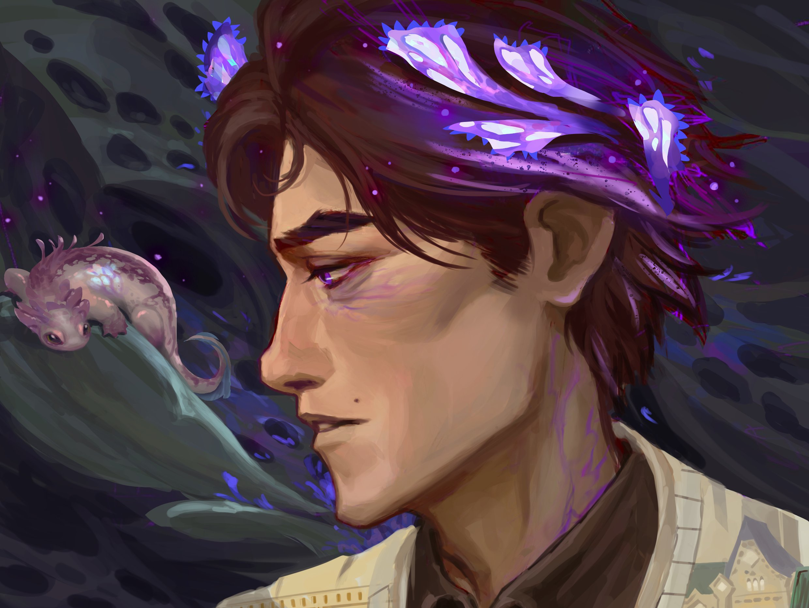

Viktor, o homem que foi assassinado por querer ser Jesus

Na imagem vemos Viktor, um jovem rapaz que foi assassinado por seu melhor amigo, após se perder no uso de uma droga extremamente forte ( hextec )
e ter delírios pensando que era um novo Jesus Cristo, um novo Messias.